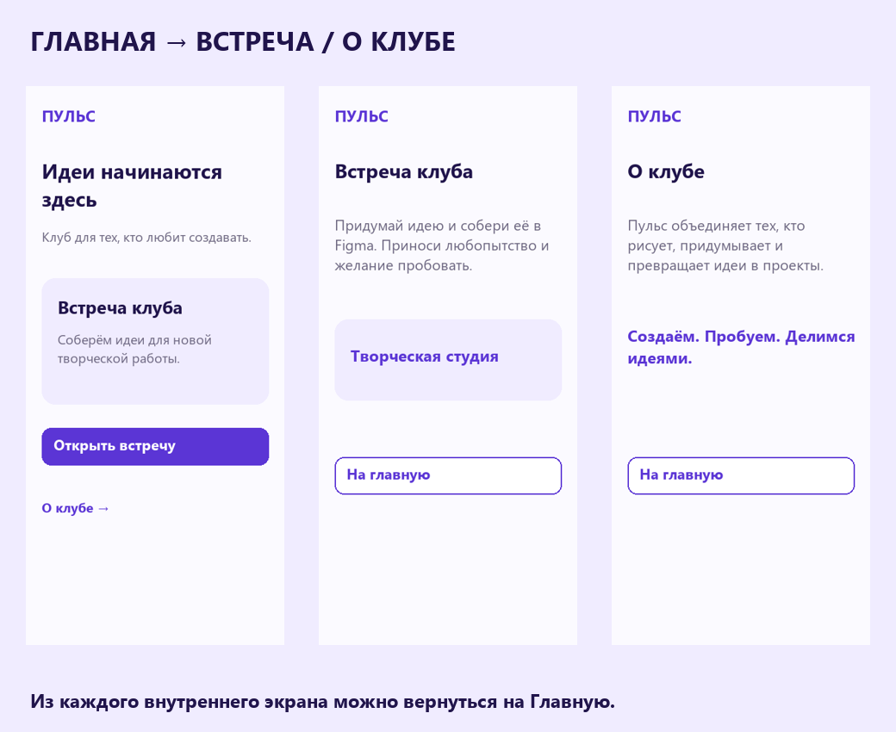
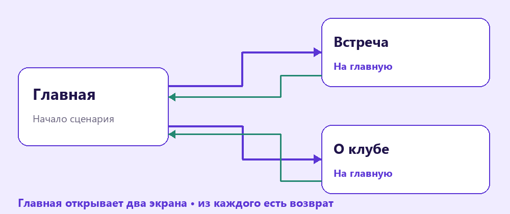
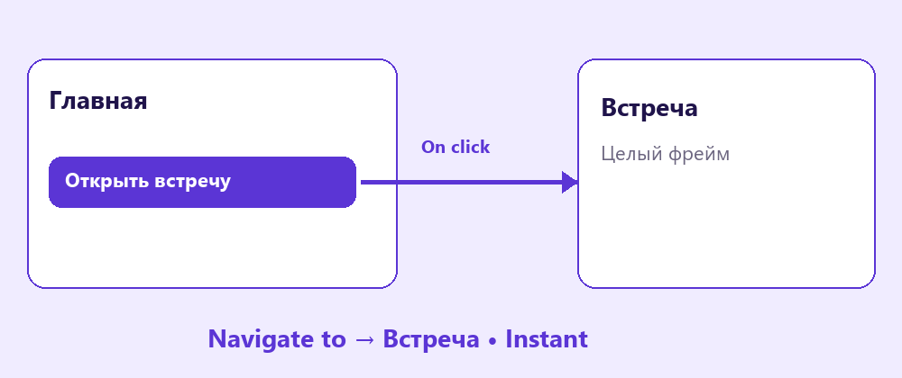
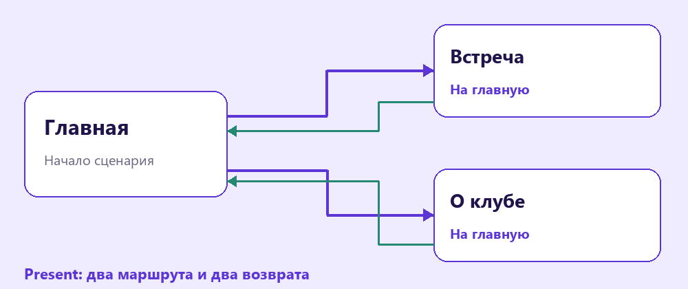

Интерактивный прототип
Соедини три экрана клуба и проверь маршрут: открыть встречу, посмотреть информацию и вернуться назад.
Перейти к заданию ↗
Перед новой практикой
Три небольших вопроса по предыдущему уроку. Выбери ответ и нажми «Проверить».
Клавиши для практики
Сочетания для Windows. Переключи клавиатуру на английскую раскладку. Перед командой заверши ввод текста.
Три состояния интерфейса
Прототип показывает маршрут пользователя. Нужны три отдельных фрейма: «Главная», «Встреча» и «О клубе». В шаблоне есть стартовые экраны для самостоятельного начала. На каждом экране оставь понятный заголовок, а на внутренних - кнопку «На главную».

Главная ведёт на два внутренних экрана. На каждом есть обратный путь.
Попробуй в Figma
Соединить действие и экран
Перейди во вкладку Prototype (прототип). Выдели кнопку «Открыть встречу» и протяни её соединение к фрейму «Встреча». В настройках выбери On click (по нажатию), Navigate to (перейти к экрану) и Instant (мгновенно). Соединяй действие с фреймом назначения, а не с отдельной фигурой внутри него.

On click запускает Navigate to; целью служит целый фрейм.
Попробуй в Figma
Пульс
Клуб творческих идей
Встреча клуба
Придумай идею и собери её в Figma.
О клубе
Рисуем, придумываем и превращаем идеи в проекты.
Пройди оба маршрута и вернись на Главную.
Запустить и пройти маршрут
Выдели фрейм «Главная» и задай Flow starting point (начало сценария) в Prototype. Нажми Present (просмотр) в верхней панели. Пройди весь маршрут, используя видимые кнопки. Если нажатие не работает, проверь выделенный объект, триггер и экран назначения.

Проверяй маршрут в Present, включая все возвраты.
Попробуй в Figma
Прототип из трёх экранов
Подготовь работающий прототип клуба из трёх экранов. У пользователя должно быть два маршрута с главного экрана и понятный возврат из каждого.
Кнопка создаёт копию шаблона. Для этого нужно войти в свой аккаунт Figma. Работай в собственной копии. Инструкции и образцы заблокированы.
Проверь свою работу
Отмечай пункты после проверки в Figma.
Если закончил раньше
Сравни Instant и Dissolve на одном переходе. Выбери вариант, который помогает понять смену экрана и не отвлекает.
Сохрани работу
Выдели итоговый фрейм или контейнер в Layers. В правой панели открой Export (экспорт), выбери PNG и нажми Export. Сохрани на флешку, назови файл своим именем. Для трёх экранов выдели каждый фрейм и сохрани его отдельно. Добавь к имени файла название экрана.